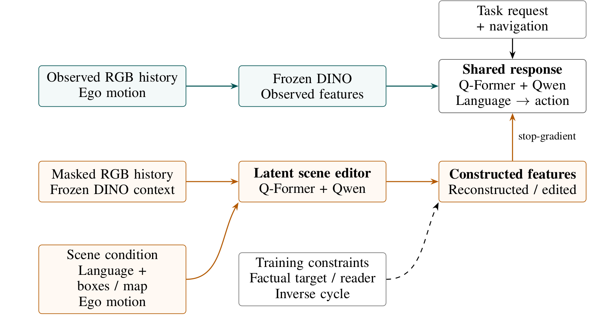
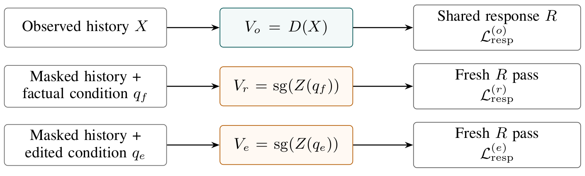

Observed feature path
Frozen DINO features from camera history remain available for ordinary driving responses.
Anonymous ICLR 2027 submission
A language-defined scene change should be represented visually before it changes a driving model's language and action.
01 · Overview
A vision-language-action driving model may produce a plausible response to a hypothetical scene without actually representing the described visual change. A correct action alone therefore does not establish visual grounding.
RESCENE studies alignment through condition-exclusive visual mediation. A latent scene editor masks affected camera-history evidence and predicts DINO features for the edited camera-time-patch support. A fresh response pass receives the assembled features, task, and navigation inputs—but not the edit condition or editor state—and generates language followed by route and trajectory.
Factual feature reconstruction, frozen semantic supervision, and an inverse feature cycle constrain the constructed representation without assuming paired counterfactual images. The manuscript specifies matched direct-conditioning comparisons, an independent feature reader, and same-world language–action tests; quantitative evaluation remains incomplete in the supplied draft.
02 · Core idea
The edited-scene condition is confined to the editor. The response receives constructed visual features in a separate pass.

Observed features support ordinary driving. The edited path constructs features from masked history using a condition supplied only to the editor. The diagram is an information-flow proposal, not evidence that grounding has been achieved. View full size ↗
Frozen DINO features from camera history remain available for ordinary driving responses.
Masked history, ego motion, and annotation-derived hints condition feature prediction on affected support.
The response reads assembled features with task and navigation inputs, not the editor's condition or state.
03 · Method
Observed, factual-reconstruction, and edited views share response weights but use independent passes and supervision.

The observed view uses real features; the factual and edited views use detached constructed features. Editor losses still train the shared weights. View full size ↗
Camera-indexed DINO features on selected time-and-patch support—not a generated RGB image. The scene condition uses language plus actor-box and map hints in offline training and evaluation.
The response pass does not receive condition tokens, editor hidden states, or editor attention cache. Stop-gradient blocks direct response-loss updates to constructed features.
04 · Evaluation design
The manuscript separates visual-feature meaning from generated language, generated action, and direct language–action shortcuts.
Does the generated description match supported attributes of the same edited world?
With task and navigation fixed, does the generated waypoint response change appropriately—or remain invariant?
With the visual world fixed, does the model follow the correct instruction rather than a shuffled one?
05 · Interpretation
The method's information flow is testable, but the architecture alone cannot establish visual grounding.
Reconstruction, a frozen training reader, and an inverse feature cycle constrain representations; none proves a unique or physically complete edited scene.
The edited path uses annotation-derived spatial hints for training and offline evaluation. Ordinary driving uses observed features directly.
06 · Citation
Author and affiliation information is intentionally omitted during double-blind review.
@misc{anonymous_rescene_2027,
title = {RESCENE: Visually Mediated VLA Alignment through Latent Scene Editing},
author = {Anonymous},
note = {Under review at ICLR 2027}
}